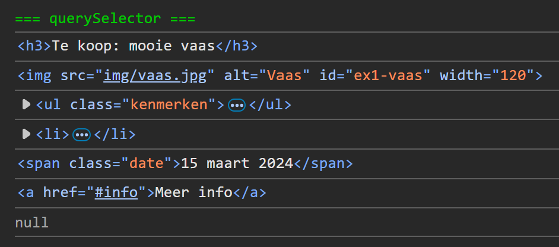
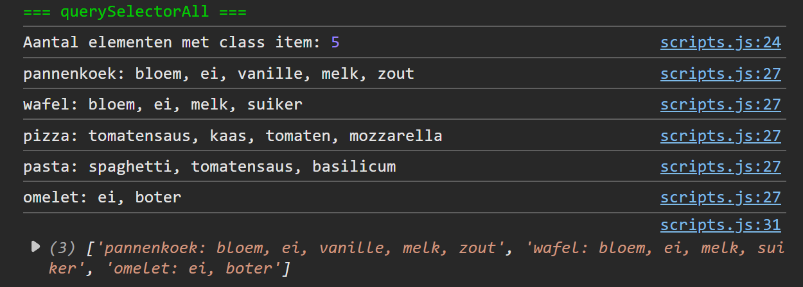
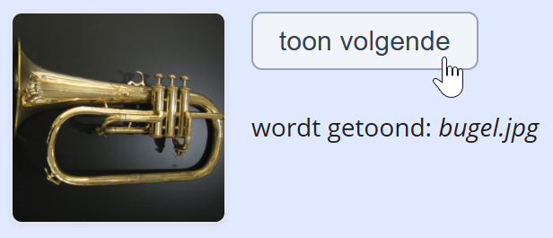
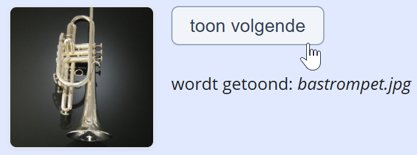
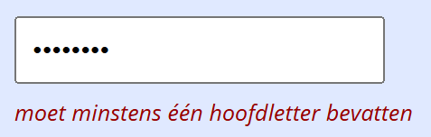
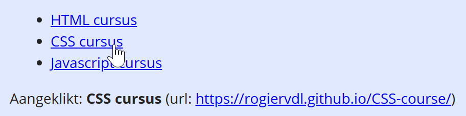
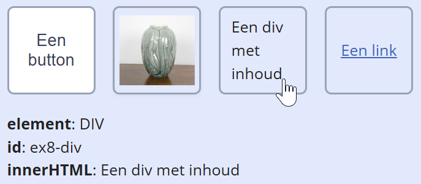
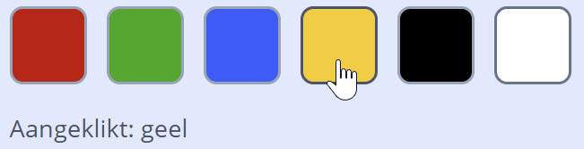
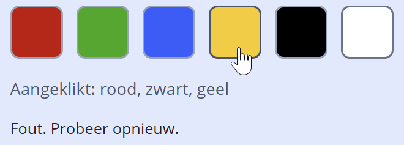

Hoe los je dit oefenblad op?
- Open de oefeningenfolder in VS Code.
- Open deze pagina in VS Code via live view.
- Open de console van de developer tools (toets F12 of rechtermuisklik → Inspecteren → tab Console).
- Elke oefening begint met een stukje theorie, en één of meer opdrachten.
- Vul telkens het overeenkomende stukje code in js/scripts.js aan
- De bijhorende HTML fragmenten vind je onder elke opgave met een lichtblauwe achtergrond
Overzicht van de oefeningen:
querySelector()
Doel: één element opzoeken met document.querySelector().
Theorie
document.querySelector(selector) geeft het eerste element terug dat matcht met de meegegeven CSS-selector:
const el = document.querySelector('#mijn-id');
console.log(el); // null indien niet gevondenJe kan elke selector gebruiken die je kent uit CSS:
const lnkMenuLaatste = document.querySelector('nav li:last-child a'); // laatste link in de navigatie
const btnSubmitReg = document.querySelector('regform [type="submit"]'); // submit button in het registratieformuliergebruik altijd de Hongaarse notatie voor constanten van elementen, dus drieletter prefix + naam: btnTest, txtOutput, imgVisual...
Opdracht
Gebruik de inspector om de juiste CSS selector te vinden voor elk element in het HTML codefragment hieronder (blauw kader). Declareer telkens een constante en log het resultaat in de console:
- de titel (tag)
- de afbeelding (id)
- het lijstje (class of tag)
- het tweede item in het lijstje (combinatie van class en nth-child)
- de span met de datum (class)
- de link in het lijstje (contextuele selector)
- een tabel (tag, zal niet gevonden worden)
tip: gebruik de id="ex1-html" van het codefragment als contextuele selector, dus document.querySelector('#ex1 .html ...').
Screenshot:

Te koop: mooie vaas
Beschrijving: een jadegroene vaas met sierlijke hals, geschikt voor een enkele bloem of een kleine bos. Staat mooi op tafel of in de vensterbank.

- Meer info
- Datum: 15 maart 2024
- Gewicht: 450 g
- Startprijs: € 15
querySelectorAll()
Doel: meerdere elementen opzoeken met document.querySelectorAll().
Theorie
Met document.querySelectorAll(selector) vind je alle elementen die matchen met de CSS-selector.
Het resultaat is een NodeList. Het aantal elementen vind je met .length:
const items = document.querySelectorAll('.mijn-class');
console.log(`Aantal: {items.length}`);De aanbevolen manier om de gevonden elementen te overlopen is een forEach():
items.forEach(el => {
console.log(el.innerText); // of el.innerHTML, el, ...
});
Let op! Een NodeList is niet hetzelfde als een array. Je kan dus niet direct array-methoden gebruiken als filter of map.
const items = document.querySelectorAll('.mijn-class');
const nodeNames = items.map(node => node.nodeName); // FOUT: NodeList is geen array!Gelukkig kunnen we de NodeList converteren naar een array met Array.from() of eleganter met de ... spread operator:
const items = document.querySelectorAll('.mijn-class');
const nodeNames = [...items].map(node => node.nodeName); // OK: resultaat is een array met nodeNamesOpdracht
Alle output komt in de console.
- Selecteer alle elementen van de lijst via hun
class-attribuut metdocument.querySelectorAll(); steek het resultaat in een constante. Log het aantal gevonden elementen. - Overloop het resultaat met een
forEachen log voor elk element de tekstinhoud (innerText) in de console. -
Maak in één regel een array met recepten die ei bevatten; log deze array in de console.
gebruik eerst de spread oparator om de NodeList te converteren naar een array.
gebruik danmap()elk element te mappen naar zijninnerText.
gebruik tenslottefilter()en deincludes()string methode om de array te filteren op' ei'.
Screenshot:

- pannenkoek: bloem, ei, vanille, melk, zout
- wafel: bloem, ei, melk, suiker
- pizza: tomatensaus, kaas, tomaten, mozzarella
- pasta: spaghetti, tomatensaus, basilicum
- omelet: ei, boter
addEventListener()
Doel: events afhandelen met addEventListener().
Theorie
Een event is een gebeurtenis op de pagina, meestal door een interactie van de gebruiker: click, mouseover, waarde form control geselecteerd... Hieraan willen we een actie met Javascript koppelen. Vertrekken we van deze HTML:
<button id="klik-button">klik mij</button>Een actie koppelen aan een button klik event doen we altijd in drie stappen:
- constante declareren voor het button element met
document.querySelector(selector) - eventhandler functie schrijven die het event afhandelt
- deze functie koppelen aan het event met
element.addEventListener(event, functie).
// referentie naar button element
const btnTest = document.querySelector('#klik-button'); // dit is een CSS selector!
// event handler functie
function btnTestClickHandler() {
console.log('er is op de test button geklikt'); // voer dit uit bij een klik
}
// koppel handler aan button click event
btnTest.addEventListener('click', btnTestClickHandler);In theorie kan het veel korter:
// met anonieme functie in arrow notatie
document.querySelector('#klik-button').addEventListener('click', () => {
console.log('er is op de test button geklikt');
});Dit komt de structuur en leesbaarheid niet ten goede; in deze cursus gebruiken we dus strikt de opdeling in drie blokken.
Enkele best practices:
- hou je strikt aan het basisschema: declaraties, event handler functies en tenslotte koppeling aan events
- de naam van de event handler is in principe vrij, maar kies best deze gestructureerde naam:
<elementNaam><Eventnaam>Handler, b.v.imgBigMouseoverHandler,selCountryChangeHandler...
Opdracht
Alle output komt in de console. De juiste namen van de events vind je in de theorie in de lijst van events.
- Bij klik op de eerste button log
'er is op button 1 geklikt'. - Bij klik op de tweede button log
'er is op button 2 geklikt'. - Bij selectie van een waarde uit de dropdown, log een bericht
'nieuwe waarde gekozen'. - Als de muis over de afbeelding komt, log een bericht
'muis over de afbeelding'. - Als de muis de afbeelding weer verlaat, log een bericht
'muis uit de afbeelding'.
inspecteer deze HTML pagina om de juiste selectors te vinden: voor de eerste button bijvoorbeeld is dit '#ex3 .btn-1', voor de dropdown is dit '#ex3 select' enz...
innerHTML en innerText
Doel: de inhoud van een element lezen of schrijven met innerHTML en innerText.
Theorie
De property innerHTML verwijst naar de HTML-inhoud (met HTML tags) van een element.
De property innerText verwijst naar de tekstinhoud (zonder HTML tags) van een element.
Neem volgend HTML fragment:
<div id="klik-test">
<button>klik mij</button>
<p class="message">...</p>
</div>Bij een klik op de button schrijven we 'hallo <strong>wereld</strong>!' naar de paragraaf:
// constanten voor button en paragraaf
const btnKlik = document.querySelector('#klik-test button');
const parMsg = document.querySelector('#klik-test .message');
// event handler functie
function btnKlikClickHandler() {
parMsg.innerHTML = 'hallo <strong>wereld</strong>!'; // vervang inhoud door deze tekst
console.log(parMsg.innerHTML); // hallo <strong>wereld</strong>!
console.log(parMsg.innerText); // hallo wereld!
}
// handler koppelen aan button click event
btnKlik.addEventListener('click', btnKlikClickHandler); Demo van het codefragment:
gebruik innerText tenzij je een reden hebt om innerHTML te gebruiken.
Opdracht 1
-
Als je klikt op de dobbelsteen moet in plaats van het vraagteken een willekeurig getal tussen 1 en 6 verschijnen.
Als de muis de dobbelsteen verlaat moet weer?verschijnen.
gebruikinnerTextom het getal of vraagteken te tonen.
Opdracht 2
-
Onder het tekstvak moet tijdens het typen verschijnen uit hoeveel tekens het bericht bestaat. Het deel 'x tekens' van de tekst moet in het schuin staan.
gebruik het'input'event om te controleren tijdens het typen.
gebruikinnerTextvoor het opvragen van de tekst in de textarea
gebruikinnerHTML,lengthen<em>voor het tonen van de tekst
Het bericht bestaat uit 0 tekens.
HTML-attributen lezen en schrijven
Doel: HTML-attributen in JavaScript lezen en schrijven als properties.
Theorie
HTML-attributen zijn in JavaScript beschikbaar als properties met dezelfde naam. Je kunt ze lezen en schrijven; de wijziging zie je meteen in de pagina.
const img = document.querySelector('#mijnImg');
console.log(img.src); // lezen
console.log(img.alt); // lezen
img.alt = 'Nieuwe beschrijving'; // schrijven
img.src = 'img/foto2.jpg'; // schrijvenVoorbeelden: src en alt op een <img>, href op een <a>, value op een <input>.
Opdracht
-
Bij klik op de knop Toon volgende moet telkens de volgende blazer worden getoond:
- declareer een array met de vier blazer afbeeldingen (in de map img)
- declareer een variabele
indexom te onthouden welke momenteel getoond wordt - bij klik op de knop incrementeer je de index, en stel je de
srcattribuut van de afbeelding in met de volgende afbeelding uit de array - tenslotte toon je de bestandsnaam van de huidige afbeelding in het uitvoergebied
Screenshots:



validatie tekstinvoer
Doel: invoer valideren, foutmeldingen tonen (input event, value, innerText).
Theorie
Het HTML attribuut dat we gaan gebruiken is value in <input value="..."> (de tekst in het tekstvak).
Neem volgend HTML fragment:
<input type="text" id="tekstvak" placeholder="typ hier...">Voorbeeldscript waarbij we de tekst in het tekstvak loggen:
// declaraties
const inp = document.querySelector('#tekstvak');
// event handler functie
function handleTekstvakInput() {
console.log(inp.value); // doe iets met de tekst in het tekstvak
}
// input event koppelen
inp.addEventListener('input', filterCijfers); // 'input': bij elke toetsaanslag; 'change': bij bevestigen waardeProbeer het uit (bekijk resultaat in de console):
Opdracht 1
In onderstaand tekstvak mogen alleen letters en spaties ingevoerd worden; ander tekens worden verwijderd.
Baseer je op dit fragment:
let tekst = '...van papier, 1,2,3,4 -hoedje van!';
tekst = tekst.replace(/[^a-zA-Z\s]/g, ''); // 'van papier hoedje van' Letters en spaties
Opdracht 2
Toon tijdens het typen foutmeldingen zolang het wachtwoord niet correct is:
- minder dan 8 tekens: toon "moet minstens 8 tekens bevatten"
- geen hoofdletter (controleer met
/[A-Z]/.test(...)): toon "moet minstens één hoofdletter bevatten" - geen cijfer (controleer met
/[0-9]/.test(...)): toon "moet minstens één cijfer bevatten"
Zolang aan alle eisen is voldaan of de tekst leeg is, verdwijnt de foutmelding. Screenshot:

Wachtwoord validatie
e.preventDefault()
Doel: het standaardgedrag van elementen uitzetten met e.preventDefault().
Theorie
Aan sommige HTML elementen is al een standaard event gekoppeld door de browser. Enkele voorbeelden:
- een link reageert op 'click' met naar de
href-URL te gaan - een submitbutton reageert op 'click' met het formulier te verzenden
- een formulier reageert op 'submit' met de gegevens naar de server te verzenden
- een input reageert op 'keypress' met de ingedrukte toets aan de veldtekst toe te voegen
Als zelf het event wil afhandelen (bijv. iets in de console loggen of eerst nog een paar checks uitvoeren),
kan je het standaardgedrag uitschakelen met e.preventDefault().
Voorbeeld voor een link:
// referentie naar link
const lnk = document.querySelector('#ex8 a');
// event handler functie
function handleLinkClick(e) { // e = click event object
e.preventDefault(); // schakel standaard click event uit (navigatie)
console.log('Link geklikt, navigatie geblokkeerd'); // log de link tekst en href
}
// event koppelen
lnk.addEventListener('click', handleLinkClick);Opdracht 1
Toon van de aangeklikte link de linktekst en de href:
- gebruik
querySelectorAll()om alle links op te vragen - overloop ze met
forEach()en koppel aan elke link een'click'event - gebruik
preventDefault()om de standaardactie van de link uit te schakelen - toon tenslotte de linktekst en de href van de aangeklikte link in het uitvoergebied (gebruik string interpolation)
Screenshot:

Aangeklikt: --
e.target
Doel: met e.target het element ophalen dat het event veroorzaakt heeft.
Theorie
In de event handler is e.target het object dat het event veroorzaakt heeft.
Het is een HTML element, dus je kan alle eigenschappen opvragen als e.target.id, e.target.innerHTML enz.
Een mogelijke toepassing is dezelfde handler aan meerdere elementen koppelen, en het onderscheid maken via e.target.
Neem volgend HTML fragment:
<div id="container">
<button type="button" id="btn1">KNOP 1</button>
<button type="button" id="btn2">KNOP 2</button>
<button type="button" id="btn3">KNOP 3</button>
<p id="bericht">...</p>
</div>In het script koppelen we dezelfde handler aan elk element via forEach():
// declaraties
const buttons = document.querySelectorAll('#container button');
const parBericht = document.querySelector('#bericht');
// event handler functie
function buttonsClickHandler(e) {
parBericht.innerHTML
= `Je hebt op <em>${e.target.innerText}</em> met id <em>${e.target.id}</em> geklikt.`;
}
// koppel dezelfde event handler aan alle buttons
buttons.forEach(btn => {
btn.addEventListener('click', buttonsClickHandler);
});Probeer het uit (klik op de buttons):
Opdracht
In de demo staan verschillende soorten elementen (button, afbeelding, div, link) in een container..
- Declareer een constante met alle directe children van de container (tip: gebruik de
'... > *'selector). - Schrijf een event handler functie die de detaisl van het geklikte element toont naar voorbeeld van onderstaande screenshot.
- Koppel met een
forEachdeze handler aan hetclickevent van elk element.
Screenshot:

element:
id:
innerHTML:
event bubbling
Doel: event handler op de parent in plaats van op elke child apart.
Theorie
Als een element aangeklikt wordt, dan worden alle onderliggende elementen ook aangeklikt. Dit heet event bubbling. Voor een uitleg en demo, bekijk deze deze uitleg.
Opdracht
Er staan zes gekleurde vakken in een container (rood, groen, blauw, geel, zwart, wit). Gebruik één addEventListener('click', ...) op de container (niet op elk vak apart).
Basisopgave:
- Toon in het uitvoergebied welke kleur geklikt is.
Screenshot:

Optionele uitbreiding:
- Maak er een klein spel van: laat de gebruiker de drie kleuren van de Belgische vlag in de juiste volgorde aanklikken (zwart, dan geel, dan rood). Houd de geklikte volgorde bij in een array. Na precies drie klikken: toon Juist! of Fout. Probeer opnieuw. en reset daarna de array zodat er opnieuw geprobeerd kan worden.
Screenshot:

Aangeklikt:
Formvalidatie
Doel: het submit-event op een formulier afvangen, invoer valideren (e-mail, dropdown, textarea) en foutmeldingen tonen.
Theorie
Een klassieker die je moet kennen is formulier validatie. Bestudeer eerst grondig de theorie op deze pagina
We maken een variant waar alle foutmeldingen in één blok worden getoond. Basisschema:
// declarations
const frmLogin = document.querySelector('...');
const inpEmail = frmLogin.querySelector('...');
... // other fields
// event handler
function handleFormSubmit(e) {
e.preventDefault(); // prevent form submission
const errors = []; // keep track of errors
// clear errors message
...
// email must have an @
if (!inpEmail.value.includes('@')) {
errors.push('email moet @ bevatten');
}
// add other validation rules...
...
// show errors message
// ...
// if no errors, submit form
if (errors.length === 0) {
frmLogin.submit();
}
}
// disable HTML5 validation
frmLogin.setAttribute('novalidate', 'novalidate');
// form submit event
frmLogin.addEventListener('submit', handleFormSubmit);
Opdracht
Voer volgende validaties uit:
- het e-mailveld mag niet leeg zijn.
- het e-mailveld moet een @ bevatten.
- er moet een optie in de dropdown gekozen zijn (tip: gebruik
value). - controleer of het textarea minstens een paar tekens bevat.
- de checkbox moet aangevinkt zijn.